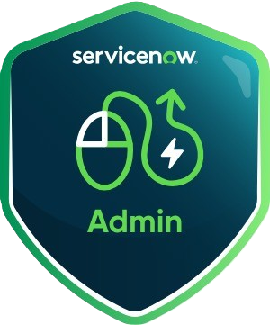
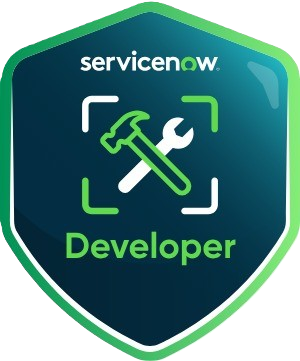
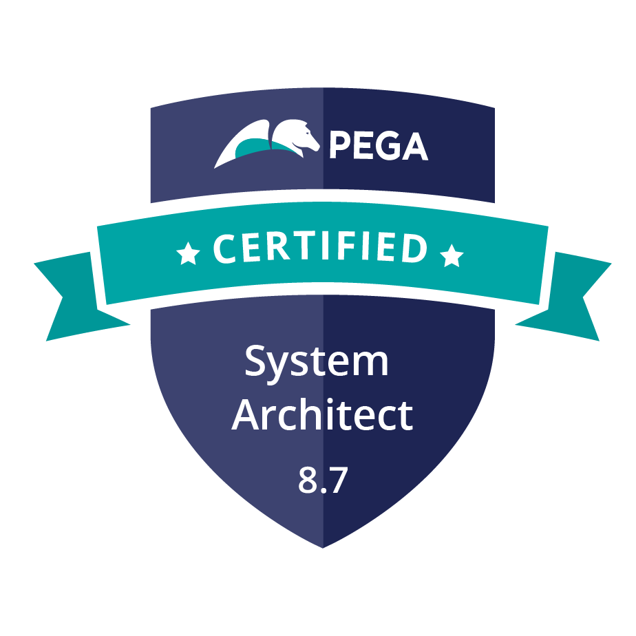
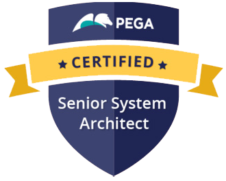
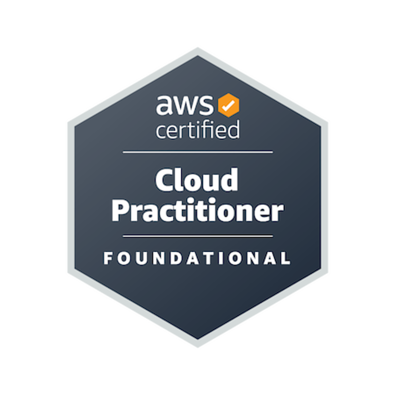

STRATEGIC PROPOSAL
SRM AI & Enterprise Centers of Excellence
AI & Enterprise Technologies | Industry-Certified Learning Pathways | Institutional Excellence
A strategic collaboration proposal between
SRM University and Technical Hub
Vision
Build a world-class technology ecosystem that cultivates industry-certified students, accelerates practical innovation, and establishes sustainable institutional capability.
October 2026
1. Executive Summary
Technical Hub proposes a strategic collaboration with SRM University to establish dedicated Centers of Excellence and industry-certified learning pathways spanning artificial intelligence, enterprise automation, cloud infrastructure, and low-code platforms. The initiative transitions technical learning beyond standalone workshops into structured, accredited, project-based pathways.
2. Objectives
- Establish premier Centers of Excellence across advanced AI, platform automation, and cloud technologies.
- Integrate globally recognized industry certification pathways with defined academic outcomes and university credits.
- Cultivate high-impact student projects, enterprise use cases, hackathons, and research publications.
- Enable faculty upskilling and sustainable internal delivery capabilities across leading tech stacks.
3. Claude Centre of Excellence
The proposed Claude Centre of Excellence functions as the university's dedicated hub for Anthropic Claude foundational models, application development, autonomous AI agents, and enterprise AI solutions.
- Claude AI, prompt engineering, structured reasoning, and foundational model mastery
- Hands-on application development with Anthropic Claude platform, Claude Sonnet/Opus, and REST APIs
- Autonomous AI agents, tool use, and Model Context Protocol (MCP) integrations
- Enterprise AI use cases, domain-specific retrieval, and real-world deployment patterns
- Student and faculty AI research, innovation challenges, and ecosystem showcases
Claude CoE Outcome
A dedicated campus innovation hub enabling continuous Claude AI learning, application engineering, autonomous agents, and enterprise problem-solving.
4. OpenAI Centre of Excellence
The OpenAI Centre of Excellence will serve as SRM University's premier facility for OpenAI tools, ChatGPT integration, API engineering, intelligent agents, and applied artificial intelligence.
- OpenAI foundational models, ChatGPT advanced data analysis, and prompt design
- OpenAI API engineering: GPT-4o, function calling, JSON schema outputs, and vision integration
- Assistants API, Code Interpreter, file search, and custom agent toolsets
- Vector embeddings, semantic search, and Retrieval-Augmented Generation (RAG) architectures
- Applied AI capstone projects, industry hackathons, and OpenAI Select partner engagements
OpenAI CoE Outcome
A state-of-the-art AI development center empowering students and faculty to build production-grade applied AI solutions with OpenAI technologies.
5. AI Ready Engineer
The AI Ready Engineer initiative is a specialized certification pathway preparing students for modern software engineering workflows through intensive Claude and GitHub Copilot enablement.
- AI-assisted coding, contextual code generation, and intelligent autocomplete with GitHub Copilot
- Deep architectural analysis, multi-file code review, and automated testing via Claude AI
- Prompt engineering patterns for software development, debugging, and legacy code migration
- Integration of AI coding assistants across industry-standard IDEs (VS Code, JetBrains)
- Curriculum and mock assessments aligned with industry-standard AI Engineer certifications
AI Ready Engineer Outcome
Industry-ready software developers with certified mastery in AI pair programming, augmented productivity, and end-to-end AI-assisted engineering.
5. AI Ready Engineer — Student Cohorts
Claude Cohort • 900+ Students Completed Anthropic Courses
GitHub Foundations Cohort
6. ServiceNow Centre of Excellence
The ServiceNow Centre of Excellence delivers comprehensive training on the enterprise Now Platform, preparing students for cloud workflow administration, ITSM solutions, and certified platform roles.
- ServiceNow architecture, lists, forms, data dictionary, tables, and schema relationships
- User administration, security rules, role-based access control (RBAC), and permissions
- Process automation with Flow Designer, Business Rules, Client Scripts, and ITSM solutions
- Dedicated preparation pathway for ServiceNow Certified System Administrator (CSA) and Application Developer (CAD)


ServiceNow CoE Outcome
Certified ServiceNow administrators proficient in deploying, configuring, and maintaining enterprise-scale digital cloud workflows.
6. ServiceNow Student Cohorts
ServiceNow Developer Cohort
ServiceNow Administrator Cohort
7. Pega University Program
Through the Pega University Program, Technical Hub prepares students for enterprise low-code digital process automation, customer engagement architecture, and certified application development.
- Pega Infinity architecture, case lifecycle management, data modeling, and user portal design
- Business rules configuration, decision tables, decision trees, and routing strategies
- Integration services: REST/SOAP connectors, background processing, and Tracer debugging
- Targeted preparation for Pega Certified System Architect (CSA) and Senior System Architect (CSSA) pathways


Pega Program Outcome
High-demand low-code enterprise architects with certified capabilities in orchestrating complex business processes on the Pega platform.
7. Pega Certified System Architect Cohort
Pega Certified System Architect Cohort
7. Pega Certified Senior System Architect Cohort
Pega Certified Senior System Architect Cohort
8. Red Hat Academy
As an authorized Red Hat Academy partner, Technical Hub equips students with industry-standard Linux system administration, virtualization, container basics, and enterprise server infrastructure skills.
- Red Hat Enterprise Linux (RHEL) system administration, shell scripting, file management, and package deployment
- User accounts, security permissions, access control lists (ACLs), and systemd service management
- Storage management: Logical Volume Manager (LVM), partitions, networking, and firewall administration
- Targeted preparation for the gold-standard Red Hat Certified System Administrator (RHCSA – EX200) credential
Red Hat Academy Outcome
Certified Linux infrastructure administrators proficient in enterprise server deployment, cloud-native administration, and RHCSA readiness.
9. MongoDB University
The MongoDB University initiative provides students with rigorous NoSQL document database design, query optimization, high-throughput aggregation, and modern application persistence skills.
- NoSQL document modeling, JSON/BSON paradigms, flexible schema design, and relational comparisons
- CRUD operations, complex querying, projection, update operators, and performance tuning
- Advanced MongoDB Aggregation Pipeline: multi-stage grouping, transformations, and analytics
- Application driver integration (Node.js/Python/Java) and preparation for MongoDB Associate Developer certification
MongoDB University Outcome
Certified NoSQL database developers equipped to design, build, and optimize high-performance data layers for modern distributed applications.
9. MongoDB Associate Developer Cohort
MongoDB Associate Developer Cohort
10. Automation Anywhere
Technical Hub establishes an intelligent automation pathway cultivating skills in Robotic Process Automation (RPA), cognitive automation, and GenAI-integrated bot development on Automation 360.
- Automation 360 architecture, Control Room, Bot Creator, Bot Runner, and process recording
- Automated data extraction, web automation, Excel integration, API orchestration, and error handling
- Document automation utilizing IQ Bot with machine learning and intelligent document processing (IDP)
- AI-powered intelligent bots integrating generative AI models with automated operational tasks
- Comprehensive preparation for Automation Anywhere Certified Advanced RPA Professional credential
Automation Anywhere Outcome
Accredited intelligent automation specialists capable of architecting and deploying end-to-end software robots across enterprise business operations.
11. Cisco Networking Academy
Through Cisco Networking Academy, Technical Hub provides industry-standard training in computer networking, enterprise infrastructure routing/switching, cybersecurity defense, and network automation.
- Network architecture, IPv4/IPv6 addressing, subnetting, VLANs, switching, and dynamic routing (OSPF)
- Enterprise network security: access control lists (ACLs), VPNs, threat mitigation, and firewall policies
- Cybersecurity fundamentals: threat analysis, endpoint security, and SOC operations
- Network programmability, Python automation, RESTful APIs, and software-defined networking (SDN)
- Preparation for globally recognized certifications: Cisco CCNA (200-301) and Cisco CyberOps Associate
Cisco Academy Outcome
Globally certified network engineers and cybersecurity analysts equipped with practical infrastructure configuration, defense, and automation expertise.
12. Oracle Academy
Technical Hub partners with Oracle Academy to provide students with hands-on Java programming, object-oriented software engineering, relational database design, and SQL mastery.
- Java programming fundamentals: object-oriented concepts, algorithms, collections, and exception handling
- Relational database modeling, entity relationship (ER) design, normalization, and relational schema mapping
- Structured Query Language (SQL) data definition, manipulation, indexing, and complex queries
- Database programming with PL/SQL: stored procedures, functions, packages, and database triggers
- Curriculum and practice aligned with the Java Foundations Certified Associate credential
Oracle Academy Outcome
Certified developers with strong object-oriented programming foundations, relational database design skills, and Oracle certification readiness.
12. Java Full Stack Cohort
Java Full Stack Cohort • 2027
13. Splunk Partnership
Through the Splunk Partnership, Technical Hub enables students to master big data analytics, log intelligence, cybersecurity monitoring, and enterprise observability.
- Machine data fundamentals, log ingestion, forwarders, indexers, and search head architecture
- Splunk Search Processing Language (SPL): search commands, reporting, statistical aggregations, and subsearches
- Real-time dashboard creation, alert configuration, visual data modeling, and operational monitoring
- Security Information and Event Management (SIEM) workflows, threat correlation, and SOC analysis
- Preparation aligned with industry observability standards and the Splunk Core Certified User pathway
Splunk Partnership Outcome
Data and observability specialists proficient in analyzing and visualizing machine data to drive enterprise security and operational intelligence.
14. Mile2 Partnership
Authorized
Training Center
As an authorized Mile2 Training Center, Technical Hub delivers globally accredited cybersecurity education, ethical hacking, digital forensics, and defensive cyber operations.
- Cybersecurity architecture: threat vectors, attack surfaces, security policies, and defense-in-depth strategies
- Ethical hacking & penetration testing: reconnaissance, scanning, vulnerability assessments, and web app auditing
- Digital forensics, incident response workflows, network packet analysis, and security auditing frameworks
- Alignment with globally recognized credentials: Certified Professional Ethical Hacker (C)PEH and Certified Incident Handling Engineer (C)IHE
Mile2 Partnership Outcome
Accredited cybersecurity professionals skilled in penetration testing, vulnerability assessment, cyber incident response, and defensive system hardening.
15. AWS Academy
Through AWS Academy, Technical Hub prepares students for cloud computing careers, scalable cloud architecture design, serverless computing, and enterprise cloud infrastructure deployment.
- Cloud architecture, AWS global infrastructure, core services (EC2, S3, RDS, VPC), and security compliance
- Scalable system design, high availability, load balancing, auto-scaling, and fault-tolerant cloud networks
- Serverless computing with AWS Lambda, API Gateway, managed databases, and CloudWatch operational monitoring
- Targeted preparation for AWS Certified Cloud Practitioner (CLF-C02) and AWS Certified Solutions Architect – Associate (SAA-C03)



AWS Academy Outcome
Certified cloud architects and engineers equipped to design, deploy, and manage secure, robust applications across the Amazon Web Services ecosystem.
16. Snowflake Data Platform
The Snowflake pathway develops practical skills for working with Snowflake’s cloud data platform, from account navigation and data loading to compute management and governed data access.
- Navigate Snowflake accounts, databases, schemas, stages, and warehouses
- Load and work with structured and semi-structured data using SQL
- Manage virtual warehouses and select compute resources for workloads
- Apply roles, access controls, and data governance practices
- Preparation aligned with the SnowPro Associate: Platform credential
Snowflake Program Outcome
Students gain foundational data platform skills in Snowflake, including data loading, compute management, SQL, and access governance.
16. SnowPro Associate Cohort
SnowPro Associate: Platform Cohort
17. Microsoft Power Platform
Microsoft
Power Platform
Low-code & analytics
The Power Platform pathway prepares students to build low-code business solutions and turn organizational data into actionable insights.
- Build canvas and model-driven apps with Power Apps and Dataverse
- Automate business processes with Power Automate and connected services
- Design solution architecture, integrations, environments, security, and governance
- Prepare, model, visualize, and secure analytics in Power BI using Power Query and DAX
- Digital credentials include PL-300 Power BI Data Analyst Associate and the legacy PL-600 Power Platform Solution Architect Expert badge
PL-600 is shown as a legacy cohort badge; Microsoft retired the exam on June 30, 2026.
Power Platform Program Outcome
Graduates develop low-code solution delivery, architecture, and Power BI analytics skills for modern business workflows.
17. Power Platform Solution Architect Cohort
PL-600 Solution Architect Cohort
17. Power Platform Developer Associate Cohort
Power Platform Developer Associate Cohort